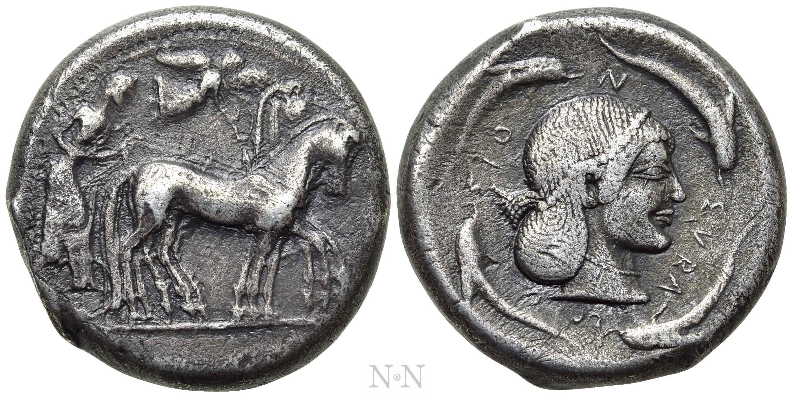
锡拉库萨·Deinomenid 僭主 四德拉克马
SICILY · Syracuse · Deinomenid Tyranny
📜 历史背景
Deinomenid 四兄弟（Gelon、Hieron、Thrasybulus、Polyzelus）于 BC 485 年建立僭主统治，Syracuse 由此跃升为西地中海最强希腊城邦。BC 480 年希梅拉战役（Himera）—— Gelon 联合 Akragas 城大败迦太基，古典作家希罗多德将其与同年的萨拉米斯海战并列为希腊人东西方战略的标志性胜利。四马战车（Quadriga）向右疾驰、Nike 飞降加冕，直接象征此类军事胜利与神圣赐福。背面 Arethusa 头像被四只海豚环绕——海豚是 Syracuse 延续数百年的城徽，寓意城市被海洋拥抱的地理与文化双重身份。此币属 Boehringer 115 标准版式，代表古典西西里艺术巅峰的前夜。
再递 Numismatik Naumann · 2025
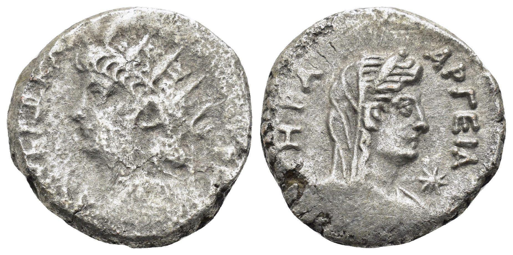
埃及·尼禄四德拉克马
EGYPT · Alexandria · Nero
📜 历史背景
亚历山大造币厂是罗马帝国内最特殊的货币发行地——奥古斯都征服托勒密埃及后，刻意保留其希腊化造币传统，以希腊铭文和神祇为主图，与拉丁传统形成鲜明对比。从提比略起，行省埃及币每位皇帝均有铸造，且每年更换纪年版式。此枚为尼禄第14年（L IΔ = RY 14 = AD 67/68），对应其希腊巡游期间。尼禄辐射冠头像左向，强调皇帝与太阳神的联系——尼禄晚年尤其致力建构「太阳神」身份。肩披 Aegis 原为雅典娜护胸甲，被罗马皇帝借用以象征神佑（divine protection）。背面天后赫拉（Hera）戴冠披巾头像右向，延续希腊化时代亚历山大对城市守护神的崇拜传统。
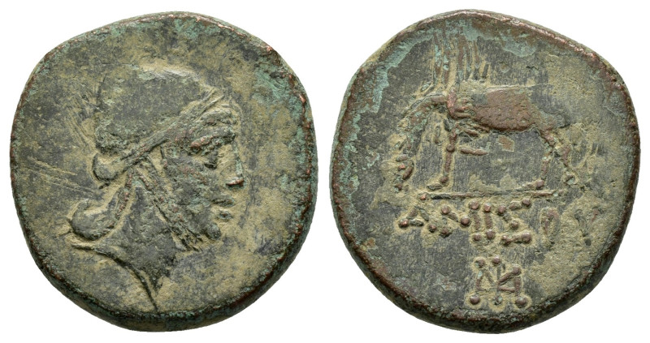
本都·阿米索斯 珀尔修斯 / 飞马铜币
PONTUS · Amisos · Mithradates VI Eupator
📜 历史背景
本都（Pontus）是黑海南岸的希腊化王国，以阿米索斯（Amisos，今土耳其Samsun）为重要造币与商业中心。米特拉达梯六世（Mithradates VI Eupator，约 120-63 BC）是本都最伟大的国王，史称"米特拉达梯大帝"——先后三次发动对罗马的战争（前 88-前 63 年"米特拉达梯战争"），一度征服小亚细亚、希腊和爱琴海诸岛，几乎推翻罗马在东方的霸权。最终被庞培击败，逃往克里米亚后自杀。
此币的珀尔修斯戴弗里吉亚帽（Pileus / Phrygian cap）形象有强烈的政治神话含义：米特拉达梯王室自诩为希腊英雄珀尔修斯（斩杀美杜莎、救赎安德洛墨达）后裔——珀尔修斯之子Perses被认为波斯与本都王族的始祖。弗里吉亚帽在希腊罗马语境中象征自由，而帽上的狮鹫装饰（griffin-crest）则呼应波斯/东方传统，体现米特拉达梯横跨东西方的统治合法性。
背面的飞马 Pegasus是阿米索斯建城神话的核心元素（飞马用蹄踢出 Hippene 泉），也是该城数百年来的固定币面主题。这枚铜币是希腊化王国政治宣传与地方传统结合的典型样本。

埃及·尼禄四德拉克马
EGYPT · Alexandria · Nero (RY 14)
📜 历史背景
罗马行省埃及是帝国内唯一被奥古斯都禁止铸造"皇帝肖像"和"拉丁铭文"的行省——奥古斯都征服托勒密埃及后，刻意保留当地希腊传统以安抚亚历山大里亚民众。亚历山大造币厂沿袭希腊化传统，以希腊铭文和神祇为主图，且每年更换版式。年份标记 L IΔ 采用"奥古斯都纪年+皇帝在位年"双轨制，即奥古斯都纪年 14 + 尼禄 RY 14 = 公元 67/68 年。 背面 AKTIOΣ AΠOΛΛΩN（阿克提乌斯·阿波罗）是奥古斯都纪念公元前 31 年阿克提乌姆海战击败安东尼与克娄巴特拉的神祇。尼禄 RY 14（67 AD）正值其希腊巡游期间、宣布"希腊自由"的同一年，埃及币上仍延续这一图式，反映出罗马对行省货币传统的政治延续性。 关于"BI"：Billon 是含银量仅约 18–25% 的银铜合金。罗马政府有意降低埃及币成色以遏制贵金属外流——罗马本土的"银币"（denarius）含银量约 80%，而埃及四德拉克马只值其 1/3 不到。这使行省埃及币成为研究罗马经济分层的独特样本。
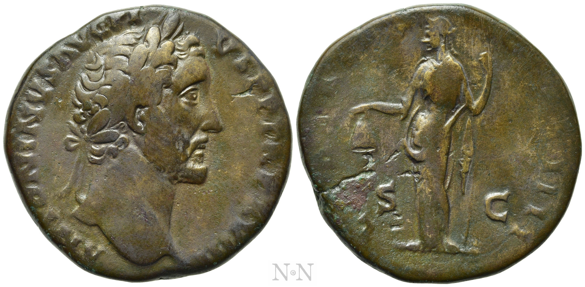
安东尼·庇护 塞斯特提乌斯（LIBERTAS COS IIII）
ROMA · Antoninus Pius · AD 145-161
📜 历史背景
安东尼·庇护（Antoninus Pius，138-161 AD）是罗马帝国"五贤帝"的第四位，以和平、不扩张、重法律著称。此币发行于其统治晚期（TR P XVIII = AD 155/6），距罗马大火已约 11 年（64 AD 尼禄时期），距哈德良长城建成约 20 年（约 142 AD）。 LIBERTAS（自由女神）是五贤帝时期反复出现的主题：自由女神站立，左手持自由帽（pileus），右手持"vindicta"（liberty rod 自由权杖）。这个组合源自罗马解放奴隶仪式（manumissio）：主人用权杖触奴隶头，宣布"hunc hominem liberum esse volo"（我愿此人自由），奴隶戴上自由帽。 五贤帝刻意铸造 LIBERTAS 主题，意在强调元老院与皇帝共治的"共和表象"——虽然实行帝制，但理论上"罗马公民自由"仍在。安东尼·庇护尤其重视此意象，因为其继位未经内战，强调"合法继承"与"恢复自由"是政治需要。 背面铭文 LIBERTAS COS IIII 中 COS IIII = 第四次执政官（约 AD 145），S-C 分别立于左右（Senatus Consulto = 元老院决议）。
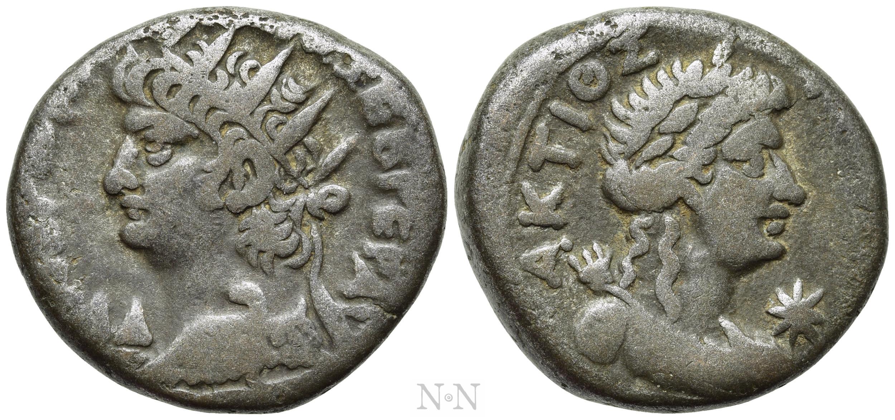
埃及·尼禄等亚历山大四德拉克马（批量×9）
ROMAN EGYPT · Alexandria · Nero & Others ×9
🏛️ Lot详情
Numismatik Naumann Auction 154 批量Lot，包含9枚亚历山大造币厂Billon Tetradrachm，主要涵盖尼禄时期及同时代其他皇帝。正面多位皇帝肖像（含NEPΩN KΛAY KAIΣ ΣEB ΓEP等多版式），背面鹰立持权杖、L年份标记等典型亚历山大类型。部分带Aegis争议细节。
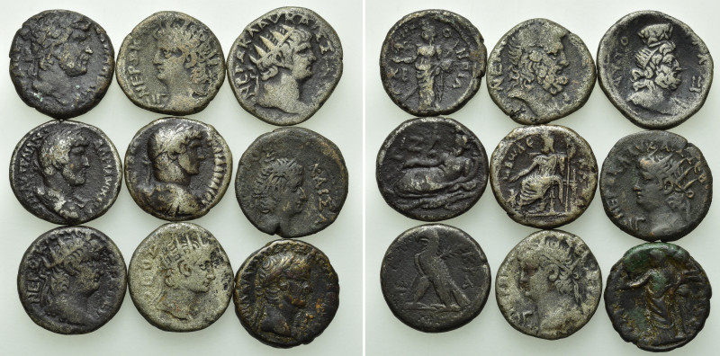
腓力二世 宙斯头像四德拉克马
MACEDON · Amphipolis · Philip II (359-336 BC)
📜 历史背景
亚历山大大帝之父腓力二世——马其顿王国奠基者，公元前338年喀罗尼亚战役确立希腊霸权。安菲波利斯造币厂是其在位期间最重要的铸币中心，币面宙斯月桂冠头像为古希腊钱币肖像艺术巅峰。背面青年骑手手持棕榈枝纪念腓力公元前356年奥运会马赛冠军——当届马其顿首次参赛即夺金，是其政治生涯的重要象征。马下双控制标记（controls）：海豚（ΔΕΛΦΙΣ delphis）= 安菲波利斯海港城市标志，pellet-in-Π = 特定年版或印模组的官方标识。Le Rider pl. 46, 19 将此版式归入腓力二世"Group C"晚期安菲波利斯币。NGC 6636427-001 认证，GVF 品相。
落槌 Numismatik Naumann · Auction 161 · 2025
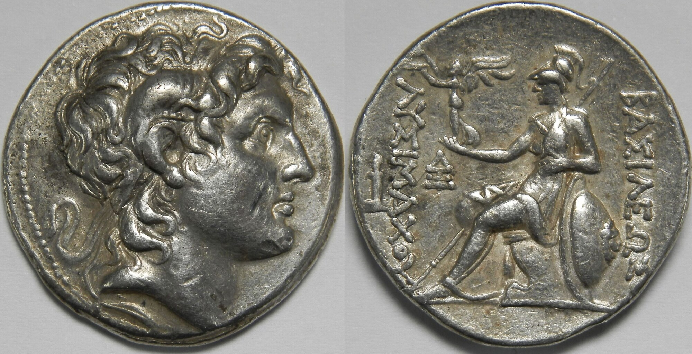
吕西马科斯 Lampsakos 四德拉克马
GREECE · Hellenistic · Lysimachos (BC 297-281)
📜 历史背景
吕西马科斯（Lysimachos，BC 360-281）是亚历山大大帝的六位近身侍卫（Somatophylax）之一，于BC 306/305年在色雷斯自立为王，建都莱普提昂杜斯（Lysimotelia），随后在其治下的色雷斯及小亚细亚地区大规模铸造四德拉克马金币。Lampsakos（兰普萨科斯）位于达达尼尔海峡入口，是吕西马科斯王国最重要的造币中心之一，掌控着从本都-潘提卡彭至爱琴海的贵金属流通命脉。
吕西马科斯四德拉克马正面沿用经典的亚历山大阿蒙之角（Ammon Horn）形象——这一肖像自BC 336年起便随亚历山大的军事扩张流通于整个希腊化世界，是最早、最具辨识度的希腊化君主肖像。亚历山大通过宣称自己是埃及阿蒙神之子（Jupiter Ammon）来建构其神性血统，吕西马科斯沿用这一肖像，既是政治宣传，也是对亚历山大开创的希腊化君主制iconography（肖像体系）的直接继承。
背面雅典娜·阿尔基德莫斯（Athena Alkidemos）是马其顿及亚历山大继承者们偏爱的战神形象——手持阿尔基（Alche，阿克顿的神盾）和矛，身披盔甲配狮皮头盔。Lampsakos造币厂以ΑΘΗΝΑΣ作为控制标记（control mark），用于区分不同批次和工匠。吕西马科斯四德拉克马是希腊化时期发行量最大、流通最广的硬币版式之一。
Solidus Numismatik（前，德国）

阿斯潘多斯 银质斯塔特
GREECE · Pamphylia · Aspendos (BC 380-325)
📜 历史背景
阿斯潘多斯（Aspendos）是潘菲利亚（Pamphylia）地区最重要的希腊殖民城市之一，位于欧里梅顿河（Eurymedon）入海口附近。该城在公元前 5 世纪波斯统治时期及随后的希腊化时期始终保持高度自治权，其独特的货币体系在整个安纳托利亚南部具有代表性。
阿斯潘多斯银币正面描绘两名摔跤手（wrestlers）正在进行角力比赛——这是古希腊体育竞技（pankration 或 wrestling）的经典题材，可能与当地举办的运动赛事或狄奥斯库里（Dockeroi）的神话典故有关。两摔跤手之间的 "FK" 是造币厂缩写或工匠标记。
背面描绘一名投石手（slinger）向右行走，正准备发射投石弹丸（bullet）。投石兵是安纳托利亚南部轻装步兵的典型代表，该形象可能与当地军事传统或赫拉克勒斯使用投石带的神话主题有关。三曲腿图（triskeles）是阿斯潘多斯币的典型辅助符号。铭文 "EΣTFEΔΙΙΥΣ" 是阿斯潘多斯（Aspendos）的希腊语城市名，置于颗粒方框（pellet square）内是潘菲利亚地区造币的典型边框设计。SNG France 103 将该版式归为阿斯潘多斯古典晚期（约 BC 380-325）标准银币。币面投石手下方有小凹痕（small ding below slinger）。

腓力二世 青铜币
MACEDON · Philip II (359-336 BC)
📜 历史背景
腓力二世（Philip II）是马其顿王国国王（公元前359-336年），亚历山大大帝之父。他通过军事改革（"马其顿方阵"战术创新）和外交手段，将马其顿从希腊边缘小国提升为希腊霸主，为亚历山大的帝国奠定基础。公元前338年喀罗尼亚战役击败希腊城邦联军后，腓力被尊为希腊世界实际统治者。
腓力二世青铜币正面为阿波罗戴王冠头像，阿波罗是希腊神话中的太阳神和音乐之神，也是马其顿王室的重要保护神。背面为青年骑手图像，是马其顿王室标志性的 iconography，铭文"ΦΙΛΙΠΠΟΥ"（腓力普斯/腓力）标明发行者身份。这类青铜小币主要作为辅币流通，用于日常小额交易。
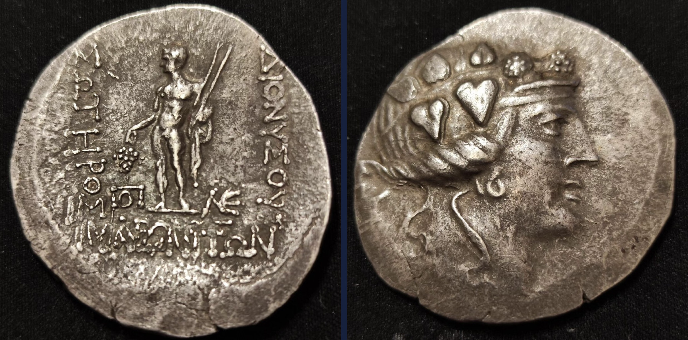
马罗尼亚 四德拉克马
THRACE · Maroneia (ca. BC 189/8–49/5)
📜 历史背景
马罗尼亚（Maroneia）是色雷斯地区重要的希腊城邦，位于今希腊东北部爱琴海沿岸。该城邦以发达的葡萄酒产业著称，据古希腊作家记载，马罗尼亚的葡萄酒是希腊世界最负盛名的佳酿之一。
马罗尼亚四德拉克马正面为年轻酒神狄俄尼索斯（Dionysos）头像，头戴常春藤花冠，额前有装饰带。狄俄尼索斯是古希腊神话中的酒神与戏剧之神，与马罗尼亚的葡萄酒文化紧密相连。背面为裸身站立的狄俄尼索斯，手持葡萄串和两根纳特赫权杖（narthex），身侧有两个组合字母（monogram）作为造币厂或官员标记。铭文"ΔΙΟΝΥΣΟΥ ΣΩΤΗΡΟΣ"意为"狄俄尼索斯，救主"，"ΜΑΡΩΝΙΤΩΝ"意为"马罗尼亚人的"，表明城邦发行身份。
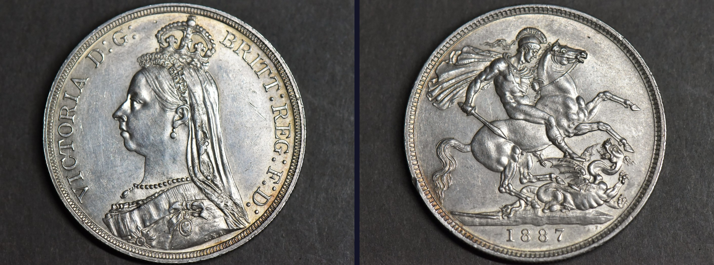
维多利亚·马剑·克朗银币
UNITED KINGDOM · Victoria · St. George & Dragon · 1887
📜 历史背景
维多利亚女王禧年（Jubilee Head）是1887年为纪念女王登基50周年而发行的纪念性头像。5克劳恩（5 shillings = 1 Crown）是英国高价值银币，由皇家造币厂铸造。禧年头像由雕塑家约瑟夫·爱德华·伯姆（Joseph Edgar Boehm）设计，是维多利亚时代最具辨识度的钱币肖像之一。
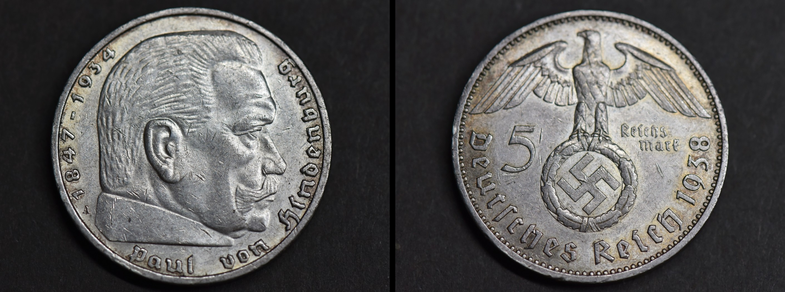
兴登堡 Reichsadler 5马克银币
DEUTSCHLAND · Paul von Hindenburg · 1938
📜 历史背景
保罗·冯·兴登堡（Paul von Hindenburg，1847-1934）是德国著名军事将领和政治家，于1925年至1934年担任魏玛共和国总统。1933年他任命阿道夫·希特勒为总理，最终导致纳粹党掌权。
"Reichsadler"（帝国之鹰）版5马克银币正面为兴登堡戎装胸像，背面为德意志帝国之鹰纹章。这类银币是魏玛共和国末期的重要流通货币，1938年铸造版见证了第三帝国早期的经济与货币体系。A标表示由柏林造币厂（Berlin）铸造。
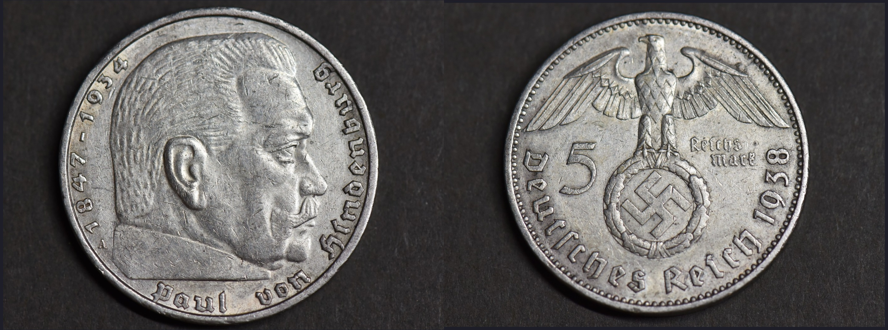
兴登堡 Reichsadler 5马克银币
DEUTSCHLAND · Paul von Hindenburg · 1938
📜 历史背景
保罗·冯·兴登堡（Paul von Hindenburg，1847-1934）是德国著名军事将领和政治家，于1925年至1934年担任魏玛共和国总统。1933年他任命阿道夫·希特勒为总理，最终导致纳粹党掌权。
"Reichsadler"（帝国之鹰）版5马克银币正面为兴登堡戎装胸像，背面为德意志帝国之鹰纹章。这类银币是魏玛共和国末期至第三帝国早期的重要流通货币，1938年铸造版见证了战前德国的货币体系。A标表示由柏林造币厂（Berlin）铸造。
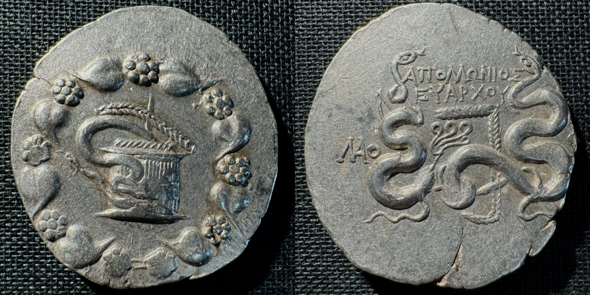
马其顿·亚历山大三世 大帝 四德拉克马
MACEDONIA · ALEXANDER III
📜 历史背景
亚历山大三世（大帝，356-323 BC）统一希腊、征服波斯，建立了人类历史上第一个横跨欧亚非的超级帝国。他对货币体系的改革影响深远：四德拉克马银币以赫拉克勒斯头像为正面，宙斯持鹰坐像为背面，成为帝国扩张的战略工具与文化符号。随着亚历山大的征服，这套币制被推广至从埃及到印度河的广大地区，继业者纷纷仿铸。利西普斯（ Lysippos ）风格的赫拉克勒斯肖像极具古典理想美，而宙斯坐像手持雄鹰的形象则强化了王权的神圣性。此枚米勒都斯（Miletus）铸币约 BC 325-320 年所见宙斯底座无碑铭，为亚历山大在世时期的早期铸型。
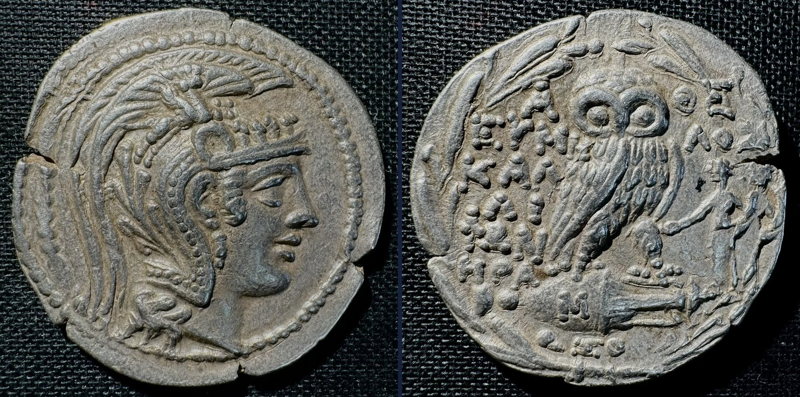
雅典城·新式猫头鹰 四德拉克马
ATHENS · NEW STYLE OWL
📜 历史背景
雅典猫头鹰银币是古希腊最具代表性的货币，从公元前5世纪延续至公元前1世纪，成为古代地中海世界的硬通货。古典时期结束后，雅典于公元前2世纪摆脱马其顿控制，重启银币铸造，采用全新设计风格——新式猫头鹰（New Style）。与古典版相比，新式猫头鹰正面雅典娜头像更为精致，头戴装饰丰富的阿提卡式头盔；背面猫头鹰立于双耳陶罐（amphora）之上，周边环绕橄榄枝，并刻有地方官姓名与徽记，体现了希腊化时期雅典城邦的自治与繁荣。
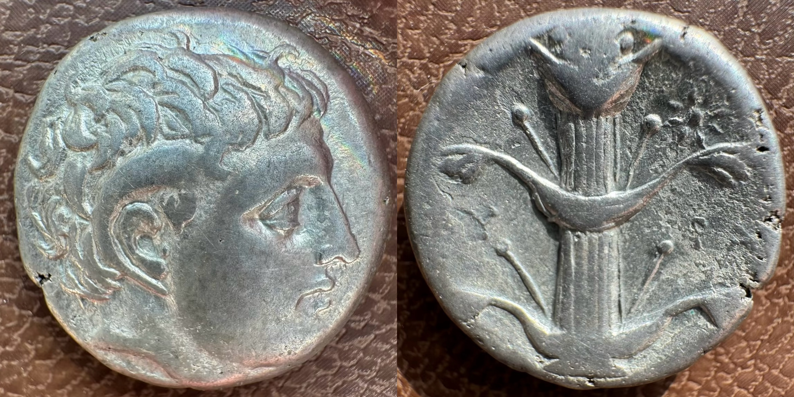
弗里几亚劳迪西亚城·蛇篮式四德拉克马
LAODIKEIA AD LYCUM · SERPENT FROM CISTA MYSTICA
📜 历史背景
蛇篮（Cista Mystica）是古希腊祭祀酒神狄奥尼索斯仪式中的神圣器物——一个装有幼蛇的柳编篮子，祭司将其取出让蛇爬出，以此象征神迹与重生。这一意象被广泛铸造在银币背面，成为古希腊钱币中最具神秘感的经典图式。此币正面蛇从篮中爬出，周围常春藤花环环绕；背面双蛇缠绕弓箭袋，铭文「AΠOΛΛΩNIOΣ ΕΥΑΡΧΟΥ」清晰漂亮——地方行政官阿波罗尼奥斯，尤阿尔科斯之子。公元前133年帕加马王国灭亡，小亚细亚落入罗马人之手，此币恐由罗马总督发行，兑换比率为三枚狄纳里银币换一枚蛇篮四德拉克马。

昔兰尼阿波罗-忘忧草2德拉克马
CYRENE · APOLLO CARNEIUS & SILPHIUM
📜 历史背景
昔兰尼（Cyrenaica，今利比亚东部）于公元前631年建城，相传由一群来自帖飞的移民在阿波罗神谕指引下建立。此城迅速崛起为古代世界最富庶的城邦之一，全赖一种神奇植物——Silphium（又名忘忧草， Laserpitium silphium）。这种形似巨大茴香的伞形科植物，只生长在昔兰尼周边海岸，拥有令人惊叹的医疗功效，尤其以高效的避孕作用闻名——古代妇女将其汁液涂抹于子宫口，成功率接近百分之百。其贸易价值极高，一磅Silphium的价格相当于一个罗马士兵六年的薪俸，罗马元老院甚至在其铸造的银币上压制Silphium图案，作为帝国繁荣的象征。塞琉古帝国在公元前3世纪初攻占昔兰尼后废止本地铸币，此币发行于城市沦陷后的罗马统治早期，由当地官员以原塞琉古模具或本地模具发行，正面阿波罗·卡内奥斯（Apollo Carneius，羊角神）头像，羊角与桂冠共存，象征城邦保护神的神圣权威；背面Silphium枝叶繁茂，茎粗壮有力，果实心脏形，根系卷曲——这一经典图式在昔兰尼钱币上延续了两百余年。令人唏嘘的是，公元1世纪Silphium已彻底灭绝，原因可能是过度采集、地震破坏与土壤退化三重打击。
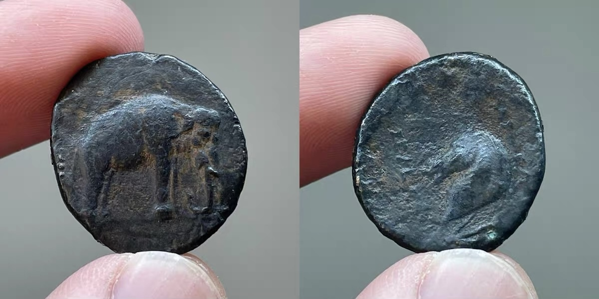
塞琉古帝国塞琉古一世铜币
SELEUCID EMPIRE · ELEPHANT & BUCERAS
📜 历史背景
公元前323年亚历山大大帝骤然离世，其帝国随即陷入继业者战争（War of the Diadochi）。塞琉古（Seleucus）作为亚历山大的近身护卫官，于公元前321年被迫流亡埃及。公元前312年，在托勒密一世的支持下，塞琉古重返巴比伦，宣布独立，开启了塞琉古帝国长达两百余年的统治，是年便成为塞琉古纪元的元年。公元前301年伊普苏斯战役（Battle of Ipsus），塞琉古与利西马科斯（Lysimachus）联手击败安提柯（Antigonus），瓜分亚历山大帝国的东部版图，塞琉古一跃成为从安纳托利亚延伸至印度的庞大帝国之君，领土面积仅次于孔雀王朝印度。 阿帕美亚（Apamaea on the Orontes）位于奥隆特斯河畔，是塞琉古帝国最繁华的城市之一，以其母——塞琉古一世之妻阿帕美亚（Apama）命名，与安条克、塞琉西亚并列为帝国三大都城。 此币正面亚洲象向右行走，象征塞琉古从印度孔雀王朝君主旃陀罗笈多（Chandragupta）手中换取的五百头战象，这些战象是伊普苏斯战役决定性胜利的关键；背面戴牛角之马头为布克法罗斯（Bucephalus）的形象，据传是亚历山大大帝的传奇坐骑，塞琉古以布克法罗斯自比，昭示其作为亚历山大正统继承人的身份；船锚则暗指塞琉古大腿根部形似锚状的胎记，同时也象征其祖先尼卡托尔（Nicator，意为「胜利者」）作为亚历山大海军指挥官与腓力二世时期的海军将领之出身，将希腊世界的海上传统与新帝国紧紧相连。
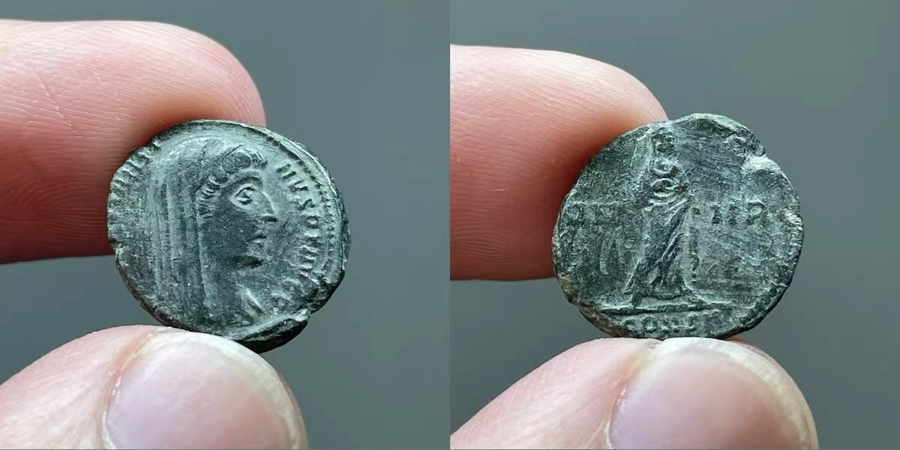
君士坦丁一世追思币
DIVVS CONSTANTINVS PT AVGG · VENERANDA MEMORIA
📜 历史背景
公元337年5月22日，君士坦丁大帝（Constantinus I，公元306-337年在位）在尼科米底亚驾崩，结束了对罗马帝国近三十年的统治。这位在位期间颁布《米兰敕令》（313年）、召开尼西亚公会议（325年）、迁都博斯普鲁斯海峡并以「新罗马」命名新都的皇帝，是罗马世界最具变革意义的统治者之一。 君士坦丁驾崩后，其三位子嗣——君士坦丁二世、君士坦提乌斯二世、君士坦斯——共同继承帝位，史称「三兄共治」（337-340年）。按照罗马传统，前任皇帝在驾崩后即被元老院封神（Consecratio），纳入罗马神祇之列并享有祭祀。新任诸帝随即在各大造币厂发行追思币（Memorial Issue / Divus Issue），纪念亡父之「成神」，并以铭文宣告其「诸帝之父」（Pater Augustorum）的崇高地位。 此枚追思币为君士坦提乌斯二世（Constantius II，公元337-361年在位）在位初期所发行。正面铭文「DV CONSTANTINVS PT AVGG」——意即「神化君主君士坦丁，诸帝之父」——其中「PT」（Pater，之父）是追思币特有的称号，标明逝者为在位诸帝之父。戴维露姆面纱（velum）的半身像表明君士坦丁已被纳入神之行列。**特别值得关注的是正面铭文采用「DV」而非常见的「DN」（Dominus Noster，吾主）**——此或为特定造币厂之变体写法，亦可能因实物磨损导致字母辨识存疑，故仍以实物记录为准。 背面的「VN-MR」铭文实为「Veneranda Memoria」（应受崇敬之记忆）之缩写，是君士坦丁追思币中**特殊变体类型**之一。相较于更为常见的「CONS（Consecratio）」型封神图案（祭坛配阶梯），VN-MR型以**戴面纱穿托加的君士坦丁站姿全身像**为核心，配合「应受崇敬之记忆」的铭文，传达对已故君主的永恒怀念。底注「CONST」指示该币铸造于**君士坦丁堡造币厂**（Constantinople Mint），即君士坦丁大帝亲手建立的新都城。

哈德良 LIBERALITAS AVG 塞斯特提
PONT MAX TR POT COS II · LIBERALITAS AVG · SC
📜 历史背景
在古罗马，有一种特殊的活动叫congiarium，起初它是向罗马城市居民分发油或酒，到奥古斯都时期演变成了在特殊场合（如皇帝登基、庆祝凯旋等）分发钱财。从尼禄统治时期开始，钱币上就出现了congiarium的场景，画面中总有一个人高举着带长柄的矩形物体。而当「慷慨」（Liberalitas）这一拟人形象在哈德良统治时期首次出现在钱币上时，这个矩形物体成了她的标志性特征。 这个神秘的矩形物体到底是什么呢？此前有多种解读。有人认为它是「tessera」（一种代币或凭证），也有人觉得是「abacus」（算盘），但观察不同皇帝时期钱币上对congiarium仪式图案的演变，尼禄时期的钱币上有两种图案形式，一种成了后续皇帝钱币的标准样式；图拉真时期的图案似乎印证congiarium有两个阶段；哈德良时期，「慷慨」拟人形象出现，逐渐取代了原本拿着矩形物体的男性形象。 结合历史记载中 congiarium 发放的货币面额信息（大多为第纳里乌斯银币，有时也会使用奥里斯金币），这个矩形物体极有可能是用于分发钱币的计数板。其表面的圆形凹陷，可辅助工作人员迅速数出待分发的钱币数量。在君士坦丁凯旋门的浮雕上，我们能够清晰看到皇帝使用类似物体向接受者分发钱币的场景。此外，画面中拿着它的人将其举到与头平齐或更高的位置展示给接受者和在场众人，保证分发过程的公平和诚实，避免出现盗窃和欺诈行为。 总的来说，这个成为「慷慨」拟人形象标志性特征的矩形物体，是congiarium仪式中不可或缺的计数、展示和分发工具，它在加快分发速度的同时，保障了分发的公正性。对于古罗马钱币收藏者而言，了解这些知识，能让我们手中的钱币「开口说话」，也是探索古罗马社会经济、政治和文化的重要线索。
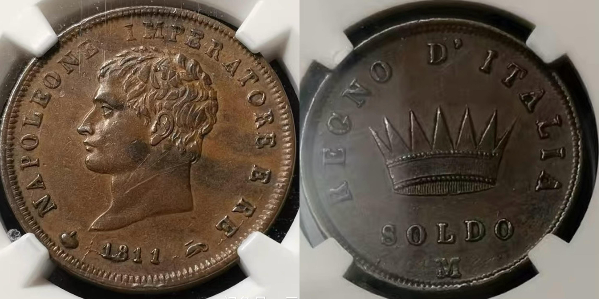
拿破仑皇帝兼意大利国王1索尔迪铜币
伦巴第铁王冠 · 米兰造币厂
📜 历史背景
1811年拿破仑帝国鼎盛时期，意大利王国（Regno d'Italia）铸造的1索尔迪铜币。米兰造币厂（Mint Mark M）出品，编号NGC-AU50，成交价992元，来源云台主人2025年10月。 拿破仑于1805年在米兰加冕为意大利国王，随后在意大利领土上推行与法兰西帝国一致的行政、金融与货币体系。意大利王国使用法国货币标准：里拉（Lira）为记账单位，辅币包括索尔迪（Soldo，1里拉=20索尔迪）和分（Centesimo，1索尔迪=5分）。此枚1索尔迪铜币正面为拿破仑桂冠头像，铭文NAPOLEONE IMPERATORE E RE（拿破仑皇帝兼国王），底部署名1811与造币厂标记M（Milano）。背面为伦巴第铁王冠（Lombardy Iron Crown）——意大利统一运动的核心象征，王冠中心铭刻REGNO D'ITALIA（意大利王国），底部面值1 SOLDO。 伦巴第铁王冠（Lombardy Iron Crown）相传以钉死耶稣的圣钉铸造，直径4.5厘米，重约250克，外包金箔，内环为铁质。它是中世纪伦巴第王国及意大利独立运动的重要象征，拿破仑在取得马伦戈战役（1800年）后于伦巴第加冕时使用过此王冠。将铁王冠图案铸于钱币，既是拿破仑宣示其意大利王权的政治行为，也暗示他继承了意大利乃至神圣罗马帝国的历史正统性。此币NGC AU50品相，币面光亮，边齿锐利，是意大利王国拿破仑时期铜币的典型收藏品。
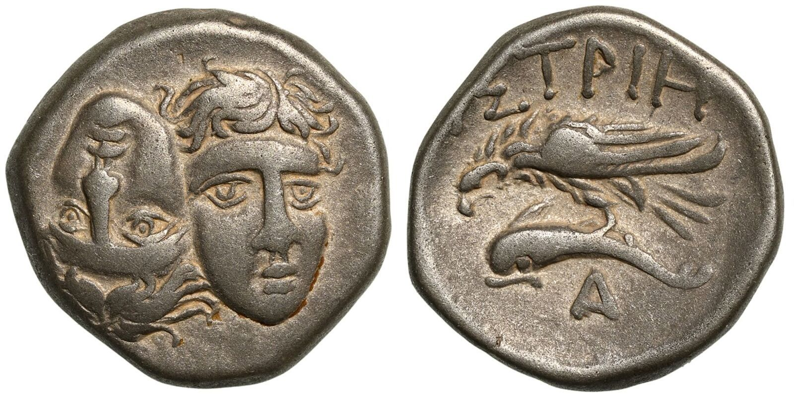
伊斯特罗斯 双人头银币
海鹰抓海豚 · 黑海古典银币
📜 历史背景
莫西亚（Moesia）伊斯特罗斯（Istros，黑海西岸重要城邦，约今罗马尼亚境内多瑙河三角洲）铸造的古典银币。 正面为双少年头像——一正一反、相互环绕。这种独特的双人头像图案是伊斯特罗斯城币的标志性设计，其象征意义学界尚有争议：一种观点认为代表Dioscuri（双子神卡斯托尔与波吕克斯），另一观点认为表现城邦的两位创建英雄或神灵（Heroes）。 背面为海鹰（鸥鹭）展开双翅抓握海豚，向左飞行。底部署名IΣTPIH（伊斯特罗斯城的希腊文名称）。这一图案反映了伊斯特罗斯作为黑海贸易港口的海洋经济特征——海鹰象征天空与神意，海豚象征海洋与商业繁荣，两者结合宣示城市对黑海贸易通道的掌控。 伊斯特罗斯城约公元前656年由米勒图斯（Miletus）移民建立，是黑海地区最早的希腊殖民城邦之一。其钱币铸造传统延续数百年，银币体系与雅典、爱奥尼亚等地有密切往来。